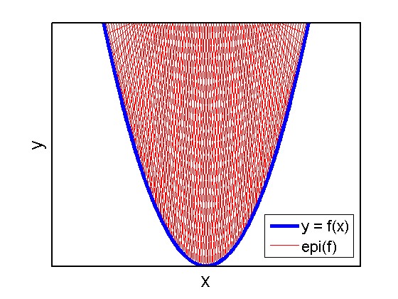

Illustration that the epigraph of a convex function is a convex set.
function epigraph
f = @(x)(x-4).^2;
domain = (0:0.01:8);
subdomain = 0:0.1:8;
xline = max([subdomain;subdomain+1]-1,min(domain));
yline = [f(max(domain))*ones(size(subdomain));f(subdomain)];
p1 = line(xline,yline,'Color','r'); hold on
xline = min([subdomain+1;subdomain],max(domain));
line(xline,yline,'Color','r');
p2 = plot(domain,f(domain),'-b','LineWidth',4);
set(gca,'XTick',[],'YTick',[],'box','on','LineWidth',2,'XLim',[-2,10]);
xlabel('x','FontSize',20);
ylabel('y','FontSize',20);
legend([p2,p1(1)],{'y = f(x)','epi(f)'},'FontSize',16,'Location','Best');
printPmtkFigure('epigraph');
end
